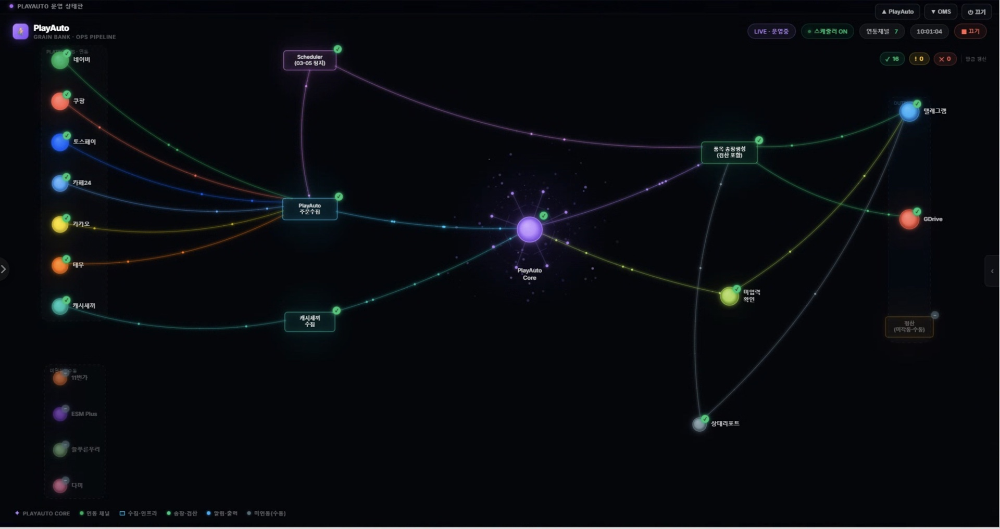
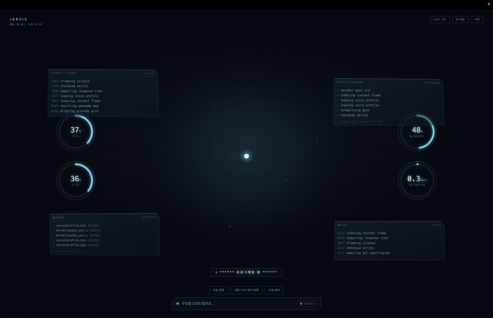
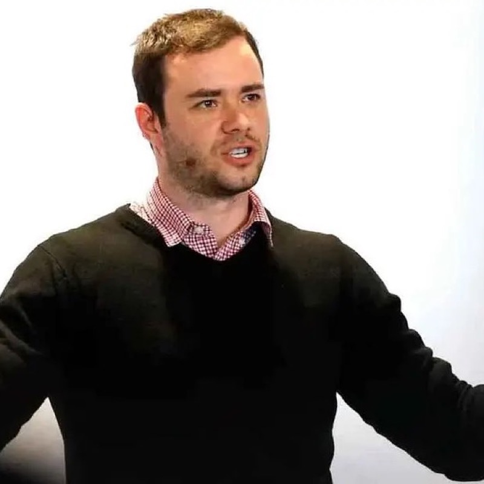
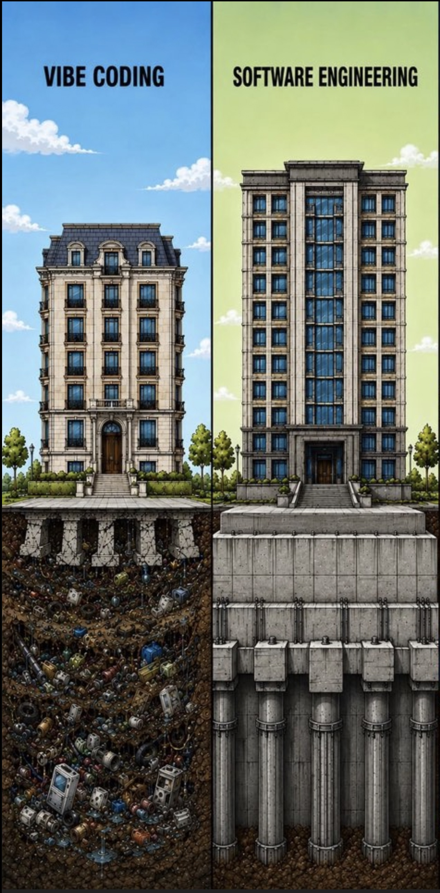
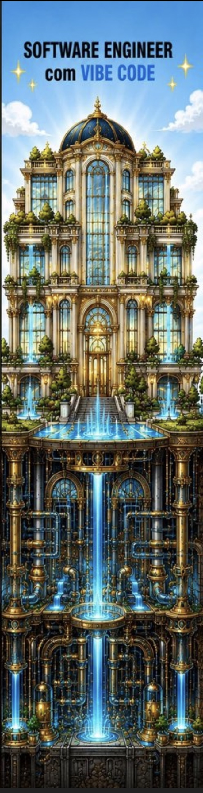

Lecture · AI Agent · Hands-on
Large Language Model —
오늘은 역사가 아니라, 직접 만듭니다.
개념 → 실습 → 검증 → 감시 · 4 HOURS
시작하기 전에 · 지도 한 장
뉴스에서 섞어 쓰지만 같은 말이 아닙니다. 바깥이 넓은 개념이고, 안으로 들어갈수록 좁아집니다.
AI ⊃ ML ⊃ DL ⊃ LLM — 포함 관계
오늘의 핵심 구분

왜 지금인가
| 예전엔 | 지금은 |
|---|---|
| 긴 작업 중간에 이탈 | 밤새 돌려도 완주 |
| 토큰 예산을 사람이 지정 | 모델이 알아서 판단 |
| "3번마다 보고해" 를 강제 | 알아서 보고 |
| "검증해라" 지시 필요 | 시키면 오히려 과잉검증 |
사라진 건 단계별 통제. 남은 건 하나 —
목적지를 명확하게 주는 일.
2026년 4월, Claude Opus 4.7부터 — 출처: Anthropic 공식 마이그레이션 문서
말이 아니라 손이 생겼습니다 — 채팅이 컴퓨터를 움직입니다
그런데 · 오늘 할 건 이게 아닙니다
간단한 건 방금처럼 그냥 시키면 됩니다. 문제는 회사 일이 그렇게 간단하지 않다는 것.
SIMPLE — 한 번에 간다
COMPLEX — 산으로 간다
시킬 때마다 다른 결과. 방향을 잃습니다.
해법 · Vibe Coding — 오늘의 본론
복잡한 작업은 말로 시키는 게 아니라 코딩한 작업물을 폴더에 넣어둡니다.
그 폴더가 곧 나만의 프로그램입니다.
출근해서 한 마디, 아니면 아예 자동으로 —
한 번 만들면, 매번 같은 결과.
Hands-on · 60 min
목표 — 브라우저에서 바로 열리는
대시보드 프로토타입 1개.
끝나면 3분 발표 — 완성이 아니라 과정을 들려주세요.
발표 · 3명 · 각 5분
완성이 아니라 과정을 들려주세요 — 막힌 곳도 발표입니다
쉬어가기 · Live Demo
맥북 로컬 · 부르면 대답합니다

이제 할 수 있게 되셨으니 · 사고 이야기
Andrej Karpathy · 前 Tesla AI 총괄 · OpenAI 창립멤버
개발자마다 자기 스타일이 있습니다.
카파시의 스타일은 — 줄이는 것. 우리는 이걸 베낍니다.
"성능이 2% 좋아져도, 복잡한 코드
500줄이 든다면 거절할 수 있다."
— llm.c 저장소 운영 원칙
"AI는 1,000줄로 만든다.
100줄이면 될 것을."
— Karpathy, 2026. 1.

안드레 카파시Andrej Karpathy
전부 그의 GitHub 원문 수치
참고 — 지금 보시는 이 강의자료도 같은 원칙입니다.
HTML 파일 1개, 외부 라이브러리 0.
그런데 개발자들은 말합니다
바이브코딩으로 만든 건 기초가 없다 —
개발자 커뮤니티의 표준 공격입니다.
맞는 말입니다. 지하는 안 보입니다.
인정하고 시작하겠습니다.
그런데 — 그 지하,
여러분은 뭘로 확인하십니까?

우리의 대답
개발자는 코드를 눈으로 검증합니다.
사람 눈은 3,000번 못 봅니다. 실행은 3,000번 됩니다.
실제로 쓰는 검증 프롬프트
개발자는 지하를 설계로 증명하고,
우리는 지하를 실측으로 증명한다.
단 — 결제·개인정보·법적 책임이 걸린 곳은 여전히 사람이 봅니다. 우리는 만능이라고 하지 않습니다. 어디까지 되는지 알 뿐입니다.
시뮬레이션 3,000회 — 청록 = 통과 · 붉은 = 결함 발견
만든 다음에도 · 지켜본다
✅ 정상 작동 중주문 수집 OK · 신규 14건
🚨 주문 수집 중단 감지최근 1시간 신규 0건 — 평소 12건
♻️ 자동 재시도 실행수집기 재기동 · 원인 추적 중
✅ 수집 재개 확인밀린 주문 31건 처리 완료
실제 운영 중인 알림 봇 — 어제도 이렇게 잡았습니다
마지막 질문 하나
아침 9시 5분의 "정상 작동 중" 메시지 —
이게 안 오는 날이, 봇이 죽은 날입니다.
정상 보고 자체가 감시견입니다.
WATCHDOG.
HEARTBEAT · 매일 아침 09:05 생존 신호

운영 노하우 · 토큰은 돈이다
| 가장 똑똑한 모델 — Fable 5 | 일 잘하는 모델 — Opus |
|---|---|
| 아키텍처 설계 | 리팩토링 |
| 까다로운 디버깅 | 대규모 마이그레이션 |
| 중요한 코드리뷰 | 반복 수정 루프 |
| 비싼 의사결정 |
직원 배치와 같습니다. 모델마다 급여가 다릅니다.
제가 실제로 쓰는 규칙 파일 그대로 — CLAUDE.md에 들어 있습니다
← → / SPACE · 숫자 = 페이지 이동 · B = 백업화면